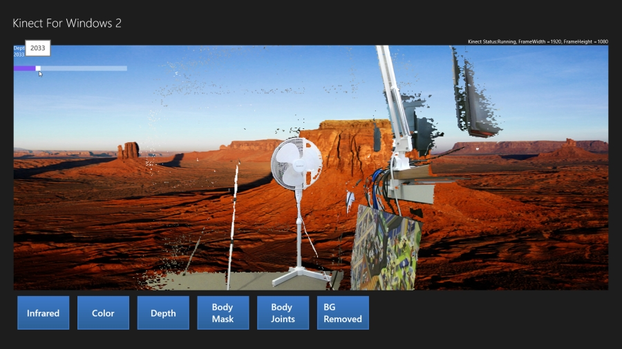
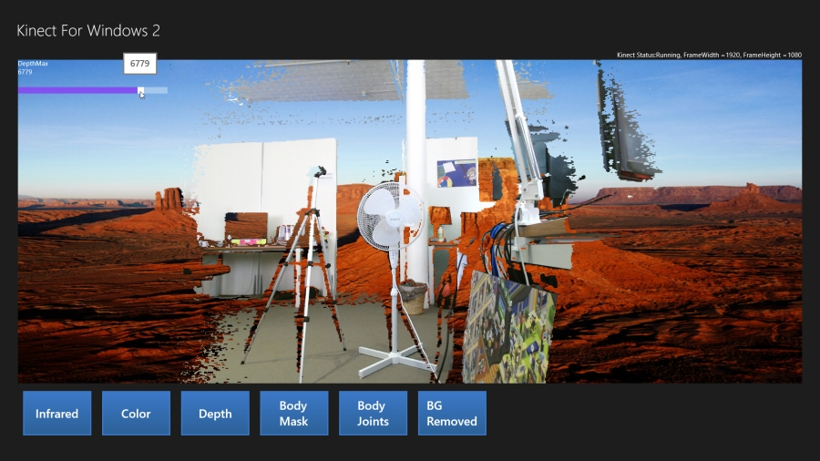

Kinect 2 for Windows Demo App
The Hands On Labs to complete a sample application for Windows 8.1 and the Kinect 2 for Windows
Kinect 2 Hands On Labs
 Lab 7: Removing the Background
Estimated Time to Complete: 30min
This lab is part of a series of hands on labs which teach you how to create a Windows 8.1 Store Application using almost every available feature of the Kinect 2. This is the seventh lab in the series, and it describes how to use the Kinect 2 to remove parts of the camera feed beyond a certain depth.
This lab will explain the following:
- How to add a background image and a slider in xaml to control depth
- How to use the color feed and depth feed mapped together
- How to use unsafe code to do bitmap manipulation in a simpler way.
- How to make a converter to switch the visibility of some xaml elements.
Exercise 1 - Adding a Slider and Background
This exercise will teach you how to set up a new feed type to render in xaml, with a background image and a slider to control the depth. These controls should only be visible when the appropriate activity is selected, so you will also create a converter which modifies the visibility of an element. This lab and all subsequent labs in this series are built using C# and assume you have a fundamental knowledge of the C# language. The screenshots here are from Visual Studio Community Edition .
Open the Kinect2Sample project and then open the MainPage.xaml from the Solution Explorer.
First you will add another image to serve as a background. Find the xaml where you added the FrameDisplayImage, and above it, add the following hilighted code:
</StackPanel>
<Image x:Name="FrameBackground" Source="Assets/Background.png"Grid.Row="1" Stretch="Fill"Visibility="{Binding CurrentDisplayFrameType,Converter={StaticResource DisplayTypeToVisibilityConverter},ConverterParameter=BackgroundRemoved }"/><Image x:Name="FrameDisplayImage" Grid.Row="1" Stretch="Uniform"/> <Viewbox Grid.Row="1" HorizontalAlignment="Center"> <Grid x:Name="BodyJointsGrid" Background="Transparent" Width="512" Height="414"/> </Viewbox>You can tell from that code snippet that this image will be controlled through a property called CurrentDisplayFrameType, and use a converter called DisplayTypeToVisibilityConverter. But before creating those properties, lets add the Image to the solution. Right Click the Image below and choose SaveAs.. and put it in the Assets directory of the solution.

Then in the Solution Explorer, Right click the Assets folder and choose Add > Existing Item, then navigate to your saved picture and click OK.Now you can create a visibility converter to compare two DisplayFrameTypes and determine if they are the same. If they match, return Visible, if not, return Collapsed.
Make a new code file for this converter, Right Click the project in the Solution Explorer and select Add... > Class... >. Name the new class DisplayTypeToVisibilityConverter.cs and click OK.
Add the following code to this new class. This converter takes a paramater as a string, and does a string compare to check the DisplayFrameTypes. It converts to a string because it's simple to provide a string in xaml as the ConverterParameter:using Windows.UI.Xaml.Data;using Windows.Xaml;//... class DisplayTypeToVisibilityConverter:IValueConverter{public object Convert(object value, Type targetType,object parameter, string language){String boundString =Enum.GetName(typeof(DisplayFrameType), value);String matchString = (String)parameter;if (String.Equals(boundString, matchString)){return Visibility.Visible;}else{return Visibility.Collapsed;}}public object ConvertBack(object value, Type targetType,object parameter, string language){throw new NotImplementedException();}}Open the MainPage.xaml again and add the DisplayTypeToVisibilityConverter as a resource of the Page at the top of the xaml:
<Setter Property="FontSize" Value="20"/> </Style><local:DisplayTypeToVisibilityConverterx:Key="DisplayTypeToVisibilityConverter"/></Page.Resources>You can now add the slider which uses the same converter for its visibility, as it should only be shown when the BackgroundRemoved DisplayFrameType is selected. Scroll down to where the FrameDisplayImage is and add the following StackPanel with a slider in it. The slider value is bound to a property DepthMax you will create next:
<Image x:Name="FrameDisplayImage" Grid.Row="1" Stretch="Uniform"/> <Viewbox Grid.Row="1" HorizontalAlignment="Center"> <Grid x:Name="BodyJointsGrid" Background="Transparent" Width="512" Height="414"/> </Viewbox><StackPanel Grid.Row="1" Orientation="Vertical"HorizontalAlignment="Left"Visibility="{Binding CurrentDisplayFrameType,Converter={StaticResource DisplayTypeToVisibilityConverter},ConverterParameter=BackgroundRemoved }"><TextBlock Text="DepthMax"/><TextBlock Text="{Binding DepthMax}"/><Slider Width="250" Minimum="500" Maximum="8000"Value="{Binding DepthMax, Mode=TwoWay}"/></StackPanel><ScrollViewer Grid.Row="2" ScrollViewer.HorizontalScrollBarVisibility="Auto"Open the code behind MainPage.xaml.cs and add the two properties, as well as the new DisplayFrameType:
namespace Kinect2Sample { public enum DisplayFrameType { Infrared, Color, Depth, BodyMask, BodyJoints,BackgroundRemoved} public sealed partial class MainPage : Page, INotifyPropertyChanged { //... //Depth Frame private ushort[] depthFrameData = null; private byte[] depthPixels = null;private ushort depthMax = 8000;//... public FrameDescription CurrentFrameDescription { //... }public DisplayFrameType CurrentDisplayFrameType{get { return this.currentDisplayFrameType; }set{if (this.currentDisplayFrameType != value){this.currentDisplayFrameType = value;if (this.PropertyChanged != null){this.PropertyChanged(this,new PropertyChangedEventArgs("CurrentDisplayFrameType"));}}}}public ushort DepthMax{get { return this.depthMax; }set{if (this.depthMax != value){this.depthMax = value;if (this.PropertyChanged != null){this.PropertyChanged(this,new PropertyChangedEventArgs("DepthMax"));}}}}public MainPage() //...Build and Run the application, there should be no errors, and the background and slider should not be showing.
Exercise 2 - The Background Removal
The method to remove the background is very similar to the logic for cutting out detected bodies in a color frame, like the BodyMask lab. This time you will do things differently, using the unsafe code only in relevance to the bitmap manipulation instead of also exposing an IBuffer for the frame data.
The bitmap manipulation required here is processor intensive. Every pixel must be checked in each frame one by one, and color manipulated as appropriate. In a 1920 by 1080 feed this is 2073600 pixels to be altered. A graphics card is exceptional at handling image rendering logic through shaders, and if this was a GPU or Direct X tutorial then this method could be used but for the sake of clarity we simply use optimised unsafe code in C# to control the bitmap.
The limitation of this is that when running with an attached debugger the performance is not very good, keep that in mind.
You've added a new DisplayFrameType to the enum already. As in the other labs, first the initialization logic for the assets in this frame type must be completed. Go to the SetupCurrentDisplay() method in the MainPage.xaml.cs code behind file, and add the new DisplayFrameType.BackgroundRemoved to the switch:
private void SetupCurrentDisplay(DisplayFrameType newDisplayFrameType) { CurrentDisplayFrameType = newDisplayFrameType; // Frames used by more than one type are declared outside the switch FrameDescription colorFrameDescription = null; FrameDescription depthFrameDescription = null; // reset the display methods if (this.BodyJointsGrid != null) { this.BodyJointsGrid.Visibility = Visibility.Collapsed; } if (this.FrameDisplayImage != null) { this.FrameDisplayImage.Source = null; } switch (CurrentDisplayFrameType) { case DisplayFrameType.Infrared: //... case DisplayFrameType.Color: //... case DisplayFrameType.Depth: //... case DisplayFrameType.BodyMask: //... case DisplayFrameType.BodyJoints: //...case DisplayFrameType.BackgroundRemoved:colorFrameDescription =this.kinectSensor.ColorFrameSource.FrameDescription;depthFrameDescription =this.kinectSensor.DepthFrameSource.FrameDescription;// Actual current frame is going to be a map of depth// and color, choosing the larger to display(color)this.CurrentFrameDescription = colorFrameDescription;// allocate space to put the pixels being received// and convertedthis.depthFrameData =new ushort[depthFrameDescription.Width *depthFrameDescription.Height];this.colorMappedToDepthPoints =new DepthSpacePoint[colorFrameDescription.Width *colorFrameDescription.Height];this.bitmap =new WriteableBitmap(colorFrameDescription.Width,colorFrameDescription.Height);break;default: break; } }This new frame type doesn't use any new variables to hold the frame data. It uses the depthFrameData (first used in the Depth Tutorial), and the colorMappedToDepthPoints(First used in the BodyMask tutorial). You are going to use them together in a different way.
The final image will only be the dimensions of the depth frame because you will remove (make transparent) any part of the color feed which is beyond a certain depth. To do this you need to know the depth of that part of the color image but because the aspect ratio of the depth and color is different, the left/right sides of the color feed are not valid because there's no depth in those regions to detect. However, the resolution of the color feed is much higher than the depth feed so you can still get a crisp image, even though the depth resolution is low. For this reason the bitmap is initialized to the colorFrameDescription size instead of the depth size.Now you will add code to process the frame. To prepare the variables for frame processing, you need to add a new case within the switch in the Reader_MultiSourceFrameArrived() method.
There are a few things which must be disposed of, so you need to implement a try, finally pattern. As this case is not exposing the frame data into a buffer (only using the bitmap pixel buffer), this is a little simpler than the BodyMask method.
Copy the new switch case below to retrieve the frame data required, copy the color data to the bitmap, and pass it all to a new method to be created next:
private void Reader_MultiSourceFrameArrived(MultiSourceFrameReader sender, MultiSourceFrameArrivedEventArgs e) { //... switch (CurrentDisplayFrameType) { case DisplayFrameType.Infrared: //... break; case DisplayFrameType.Color: //... break; case DisplayFrameType.Depth: //... case DisplayFrameType.BodyMask: //... break; case DisplayFrameType.BodyJoints: //...case DisplayFrameType.BackgroundRemoved:// Put in a try catch to utilise finally() and// clean up framestry{depthFrame = multiSourceFrame.DepthFrameReference.AcquireFrame();colorFrame = multiSourceFrame.ColorFrameReference.AcquireFrame();if ((depthFrame == null) || (colorFrame == null)){return;}depthFrame.CopyFrameDataToArray(depthFrameData);this.coordinateMapper.MapColorFrameToDepthSpace(depthFrameData,this.colorMappedToDepthPoints);// Process Color.colorFrame.CopyConvertedFrameDataToBuffer(this.bitmap.PixelBuffer,ColorImageFormat.Bgra);ShowMappedColorBackgroundRemoved(colorMappedToDepthPoints,depthFrameData, depthFrame.FrameDescription);}finally{if (depthFrame != null){depthFrame.Dispose();}if (colorFrame != null){colorFrame.Dispose();}}break;default: break; } }Add the new method ShowMappedColorBackgroundRemoved which will process the frame data. Put this new method with the other Show... methods in the MainPage class.
This method is where the unsafe code is going o be added to enable the compiler to create more optimal code.
The method does the following:- iterates through all pixels in the colorMappedToDepthPoints,
- checks the depth for each pixel (if there is a depth for that pixel),
- and keeps the color if the depth is within the DepthMax allowed,
- or zeroes out (makes transparent) the pixel if not.
unsafe private void ShowMappedColorBackgroundRemoved(DepthSpacePoint[] colorMappedToDepthPoints,ushort[] depthFrameData, FrameDescription frameDescription){fixed (DepthSpacePoint* colorMappedToDepthPointsPointer =colorMappedToDepthPoints){IBufferByteAccess bitmapBackBufferByteAccess =(IBufferByteAccess)this.bitmap.PixelBuffer;byte* bitmapBackBufferBytes = null;bitmapBackBufferByteAccess.Buffer(out bitmapBackBufferBytes);// Treat the color data as 4-byte pixelsuint* bitmapPixelsPointer = (uint*)bitmapBackBufferBytes;int depthWidth = frameDescription.Width;int depthHeight = frameDescription.Height;// Loop over each row and column of the color image// Zero out any pixels that don't correspond to a body indexfor (int colorIndex = 0;colorIndex < this.colorMappedToDepthPoints.Length;++colorIndex){float colorMappedToDepthX =colorMappedToDepthPoints[colorIndex].X;float colorMappedToDepthY =colorMappedToDepthPoints[colorIndex].Y;// The sentinel value is -inf, -inf,// meaning that no depth pixel corresponds to this// color pixel.if (!float.IsNegativeInfinity(colorMappedToDepthX) &&!float.IsNegativeInfinity(colorMappedToDepthY)){// Make sure the depth pixel maps to a// valid point in color spaceint depthX = (int)(colorMappedToDepthX + 0.5f);int depthY = (int)(colorMappedToDepthY + 0.5f);// If the point is not valid,// there is no body index there.if ((depthX >= 0) && (depthX < depthWidth) &&(depthY >= 0) && (depthY < depthHeight)){int depthIndex = (depthY * depthWidth) + depthX;if (depthFrameData[depthIndex] < DepthMax){continue;}}}// no matching depth. zero out the pixel.bitmapPixelsPointer[colorIndex] = 0;}}this.bitmap.Invalidate();FrameDisplayImage.Source = this.bitmap;}To switch to this new DisplayFrameType, you need to add a button to the xaml. Open the MainPage.xaml file and add the following button to the StackPanel with all the other buttons:
<StackPanel Orientation="Horizontal"> <!-- ... other frame select buttons --><Button Style="{StaticResource FrameSelectorButtonStyle}"Click="BackgroundButton_Click"><TextBlock Text="BG Removed" TextWrapping="Wrap" /></Button></StackPanel>Finally, open the MainPage.xaml.cs code file again and add a new method at the bottom of the MainPage class to set the DisplayFrameType when the button is clicked.
private void BackgroundButton_Click(object sender, RoutedEventArgs e){SetupCurrentDisplay(DisplayFrameType.BackgroundRemoved);}Build and Run the application. There should be no errors. If you click on the BG Removed button now, you will notice a terrible framerate, but the background and slider should be visible. This is because you are running with an attached debugger. Stop debugging
Press Ctrl + F5 or select DEBUG > Start Without Debugging to run without an attached debugger and you will get a good framerate with the background removed!
Try using the depth slider on the top left to change the DepthMax and eliminate more or less of the image as a result.

Summary
This lab explained how to use the depth frame with the color frame, to eliminate the background. You can probably imagine using this technique to create an animation in a kinect game to reveal the players. Using debug controls, like the DepthMax slider, can be very helpful when initially working with the Kinect. Debug controls provide a way for you to see the effect of parameter changes in real time.
Feeds can be used together to create interesting results, and putting a person in another environment is one of the most commonly requested features. This Depth Max method, along with the Body Mask method, are the best ways to achieve this effect.
The next lab will begin from the code completed in this lab code.